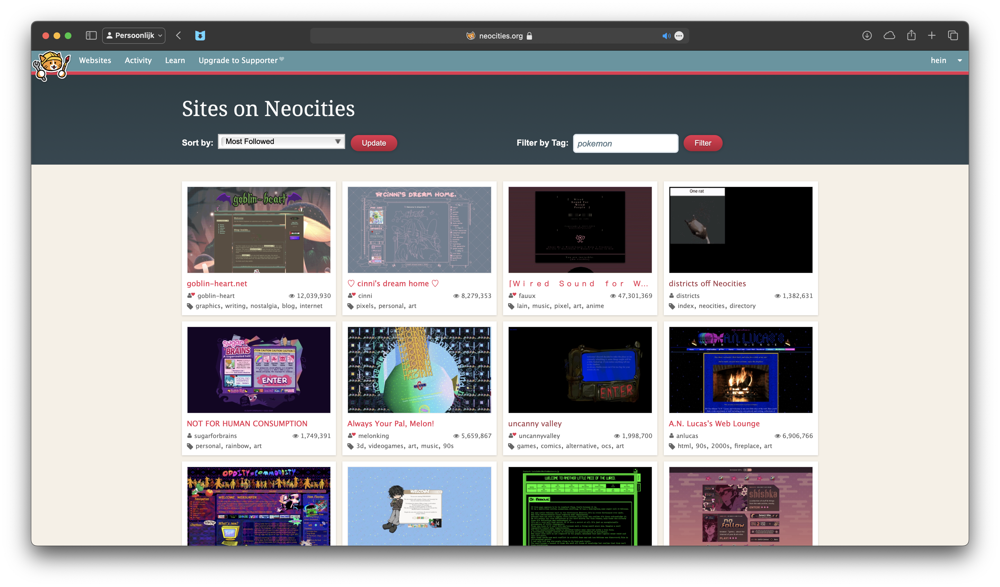
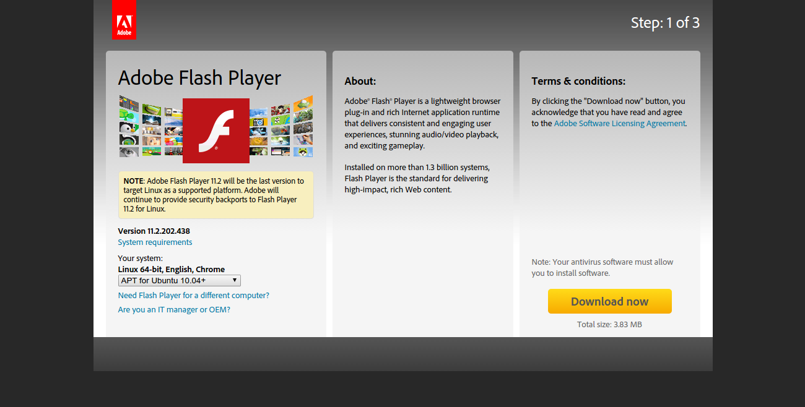

Neocities is one of my main sources of inspiration for my portfolio site. It’s a site where people can host their custom made personal websites, akin to Geocities from the late 90s.
Most sites on Neocities are not meant to be very professional looking. They are hobbyist projects, a place for people to showcase their works and own style.
One of the things I like about Neocities is the freedom it gives to the user. You can use any kind of design, any kind of layout, any kind of color scheme. It’s a place where you can be as creative as you want to be.
Another source of inspiration for my portfolio site is the Flash era of the internet. Flash was a multimedia platform that was widely used in the late 90s and early 2000s. It was used to create animations, games, and interactive websites.
Flash websites were known for their interactivity and animations. They were often very colorful and had a lot of movement. They were also known for their experimental designs and layouts.
One of the things I like about Flash websites is the sense of playfulness and creativity they had. They were not afraid to break the rules and try new things. They were a place for experimentation and innovation.
One of the greats was, and still is Homestar Runner.

Homestar Runner was a web series that was created in 2000 by Mike and Matt Chapman. It was known for its humor, its characters, and its use of Flash animation. It was also known for its website, which was full of interactive elements and hidden Easter eggs.
One of the things I like about Homestar Runner is the way it used the internet as a medium. It was not just a series that was put on the internet, it was a series that was made for the internet. It used the internet’s interactivity and multimedia capabilities to create a unique and engaging experience.
The night theme has